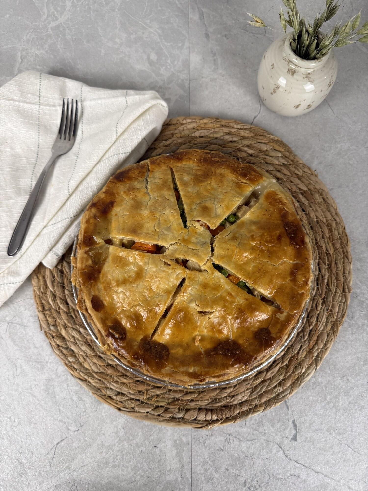

Warm suppers that still suit the season — made slowly, cooled by an open window, eaten without hurry.

Peas, carrots, corn, and mushrooms folded into turkey and its own gravy, under a double crust made from scratch. Comfort that doesn't feel heavy.
Read the RecipeThe everyday one — chicken and its gravy with peas, carrots, corn, green beans, and mushrooms, under a double crust. The supper there's rarely a slice left of.
Read the RecipeThe cold, bright one. Salami, pepperoni, fresh mozzarella, olives, and Parmesan tossed through cool pasta with a red-wine vinaigrette — an antipasto platter in a bowl.
Read the RecipeAn old comfort, brightened — a tender, milk-soft loaf under a dark, sticky glaze of balsamic, brown sugar, and ketchup. The supper that takes care of you.
Read the Recipe"Warm and cold both — pies, a loaf, and a bright bowl. Fall suppers will join the table when the season turns."